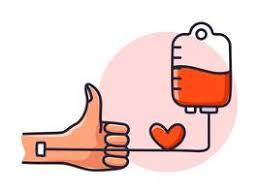

LA IMPORTANCIA DE DONAR SANGRE
Donar sangre tiene múltiples beneficios para la salud, como equilibrar los niveles de hierro en la sangre, reducir el riesgo de padecer infartos y accidentes cardiovasculares, entre otros. Un donante puede ayudar hasta 3 personas con una sola donación. La donación de sangre es segura. Se utilizan equipos nuevos, estériles y desechables para cada donante, por lo que no hay riesgos de tener una infección de trasmisión hemática al donar sangre. La mayoría de los adultos sanos pueden donar una pinta (alrededor de medio litro) de manera segura, sin riesgos para la salud



¿PUEDO DONAR?
Cruz Roja Española 2022. Todos los derechos reservados. Pulse aquí para consultar los ASPECTOS LEGALES
Agencia de Colocación autorizada con el número 9900000098
Contacto Política de privacidad Política de Cookies